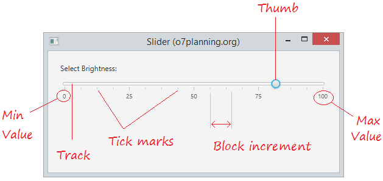
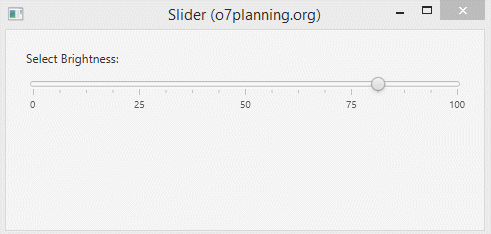
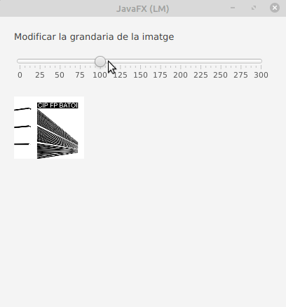

Slider
Un control lliscant és un control en JavaFX que s’utilitza per a mostrar un rang continu o discret d’opcions numèriques vàlides i permet a l’usuari interactuar amb el control. Un control lliscant es representa com una barra vertical o horitzontal amb una perilla que l’usuari pot lliscar per a indicar el valor desitjat. Un control lliscant també pot tindre marques i etiquetes per a indicar els intervals al llarg de la barra.

Les tres variables fonamentals del control lliscant són min, max i value. El valor sempre ha de ser un número dins del rang definit per min i max. min sempre ha de ser menor que max. min per defecte és 0, mentre que max per defecte és 100.

Constructors de la classe:
- Slider(): crea una instància de control lliscant predeterminada.
- Slider(doble mínim, doble màxim, doble valor): construeix un control lliscant amb els valors mínims, màxims i actuals del control lliscant especificat.
Mètodes d’ús comú:
- ajustValue(double newValue): Ajusta el valor perquè coincidisca amb valor nou.
- decrement(): Disminueix el valor per blockIncrement, limitat per max.
- getBlockIncrement(): Obté el valor de la propietat blockIncrement.
- getMax(): Obté el valor de la propietat max.
- getMin(): Obté el valor de la propietat min.
- getMajorTickUnit(): Obté el valor de la propietat majorTickUnit.
- getMinorTickCount(): Obté el valor de la propietat minorTickCount.
- getValue(): Obté el valor del valor de la propietat.
- increment(): Incrementa el valor per blockIncrement, limitat per max.
- setBlockIncrement(double value): Estableix el valor de la propietat blockIncrement.
- setMajorTickUnit(double value): Estableix el valor de la propietat majorTickUnit.
- setMax(double value): Estableix el valor de la propietat max.
- setMin(double value): Estableix el valor de la propietat min.
- setMinorTickCount(int value): Estableix el valor de la propietat minorTickCount.
- setValue(double value): Estableix el valor del valor de la propietat.
- setValueChanging(boolean value): Estableix el valor de la propietat valueChanging.
- setShowTickMarks(boolean value): Estableix el valor de la propietat showTickMarks.
- setShowTickLabels(boolean value): Estableix el valor de la propietat showTickLabels.
- isShowTickLabels(): Obté el valor de la propietat showTickLabels.
- isShowTickMarks(): Obté el valor de la propietat showTickMarks.

back